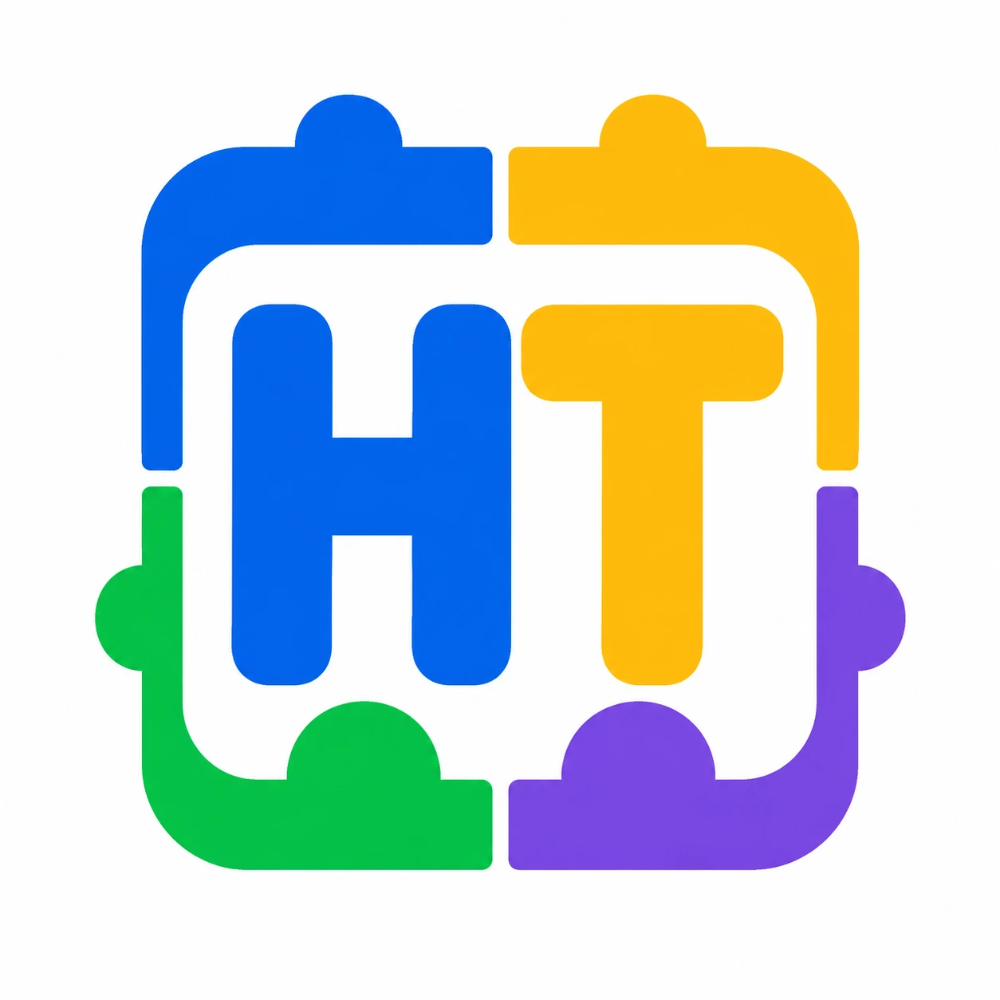

Política de Privacidad
Helping Teachers ofrece herramientas de aula diseñadas para uso de maestros. Los estudiantes no deben crear cuentas ni usar la plataforma directamente sin supervisión del maestro.
Acceso sin cuenta
Los maestros pueden usar las herramientas de aula sin crear una cuenta. El inicio de sesión está pensado para funciones opcionales de guardado, como guardar preferencias, listas, horarios o configuraciones de herramientas, para poder volver a usarlas luego o acceder desde diferentes dispositivos.
Guía de privacidad estudiantil
Los maestros no deben escribir nombres completos de estudiantes ni información sensible de estudiantes en las herramientas. Cuando una herramienta pida una lista de estudiantes, usa nombres de pila, apodos, iniciales u otro identificador apropiado para el aula. Si dos estudiantes tienen el mismo nombre, agrega un distintivo pequeño como la inicial del segundo nombre o del apellido.
Información que recopilamos ahora
Las herramientas actuales están diseñadas para funcionar sin cuentas de estudiantes ni registro de estudiantes. La información escrita dentro de las herramientas, como nombres, grupos, horarios o tarjetas, está pensada para permanecer en el navegador salvo que una función futura de cuenta guardada indique lo contrario claramente.
Algunas herramientas pueden usar almacenamiento local del navegador para recordar preferencias básicas o elementos guardados en tu dispositivo. Puedes borrar estos datos desde la configuración del navegador.
Cuentas de maestros
Si se agregan funciones de inicio de sesión para maestros, el inicio de sesión será opcional para usar las herramientas y necesario solo para guardar o sincronizar datos. Helping Teachers puede recopilar información básica de la cuenta del maestro, como correo electrónico, nombre visible, proveedor de inicio de sesión, preferencia de idioma y configuraciones guardadas. Las cuentas de maestro están pensadas para adultos y educadores, no para estudiantes.
Análisis y proveedores de servicio
Podemos usar análisis básicos y proveedores confiables para comprender el uso general del sitio, operar funciones de inicio de sesión, mejorar la confiabilidad y proteger el servicio. No vendemos información personal y no usamos información de estudiantes para publicidad dirigida.
Eliminación de datos
Los maestros pueden borrar datos locales desde la configuración del navegador. Cuando existan funciones de cuenta, planeamos ofrecer una forma de solicitar la eliminación de la cuenta o datos guardados.
Actualizaciones de esta política
Podemos actualizar esta política a medida que las herramientas crezcan, especialmente cuando se agreguen funciones de inicio de sesión o cuentas guardadas. Las actualizaciones se publicarán en esta página.